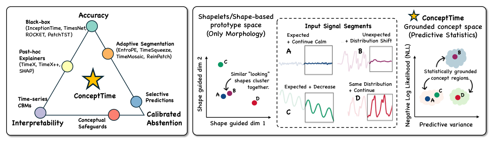
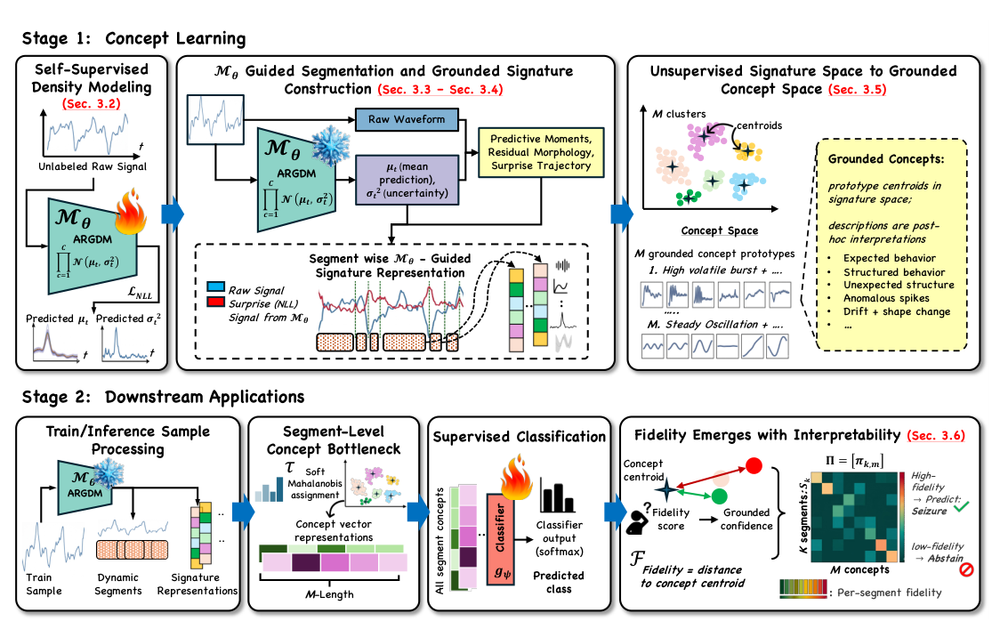
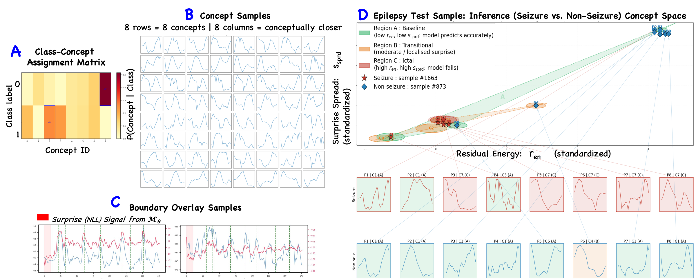
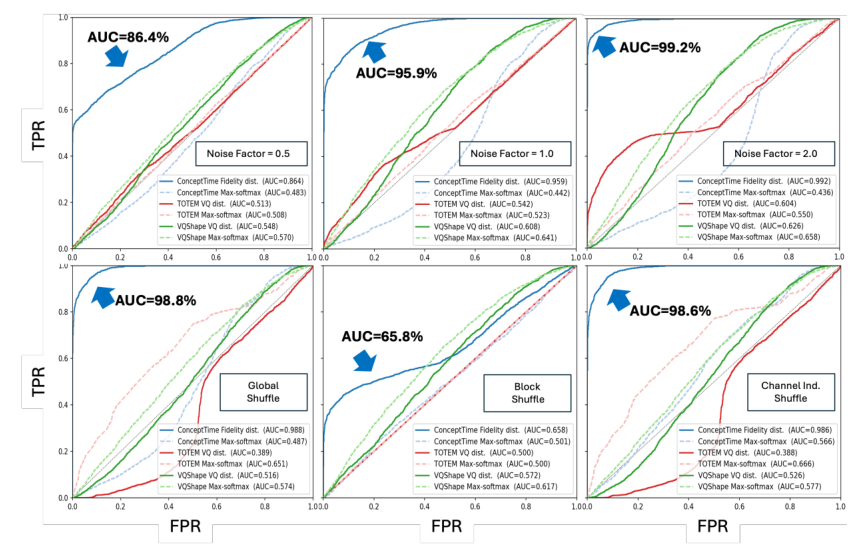
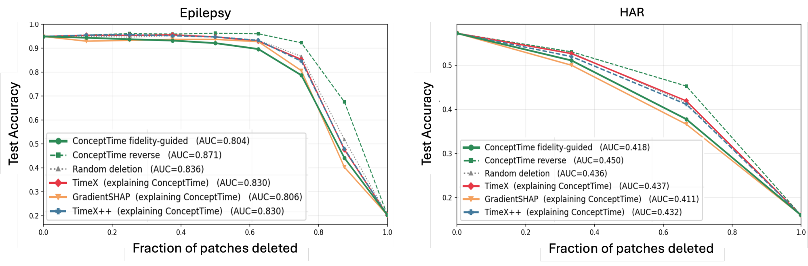

Self-supervised density model
A 4-layer causal Transformer (ARGDM) predicts a diagonal Gaussian over the next step. A calibration regularizer keeps σ² honest. It is trained once, then frozen.
ConceptTime
*Corresponding author
Interactive sketch on a synthetic signal using simplified versions of each stage. It shows the mechanism, not the paper's experiments. Click a step, or switch to “Unfamiliar input” to see abstention.
TL;DR. One frozen forecaster's surprise does three jobs at once: it decides where segments start and end, describes how each segment behaved, and tells the classifier when an input is outside what it knows. The result is an interpretable time-series classifier that needs no concept annotations, stays competitive with black-box models, and keeps near-98% accuracy on Epilepsy with just 1% of the labels.
public benchmarks across wearables, EEG, UEA, and fault diagnosis
Epilepsy accuracy with only 1% of training labels
OOD AUROC of the built-in fidelity score (HAR, strongest noise)
mean cross-domain transfer accuracy with 5% target labels
Time-series classifiers deployed in risk-sensitive domains must be (1) accurate, (2) interpretable, and (3) able to abstain when evidence is weak. Existing methods do not deliver all 3 at once, and the obstacle is structural, rather than logistical. Meaningful temporal patterns cannot be defined without knowing segment boundaries, yet meaningful boundaries cannot be placed without knowing which patterns to expect. Existing approaches break this circularity by using fixed windows or expert-annotated vocabularies, thereby sacrificing at least one of the 3 properties.
We introduce ConceptTime, which closes the loop through a single self-supervised signal. A frozen probabilistic forecaster predicts a distribution over the next observation at every timestep of the sequence. We call the mismatch between its prediction and the realized signal the predictive surprise. This signal both locates segment boundaries and characterizes each resulting segment through the forecaster. Segments are thus grounded by how they behaved relative to expectation, not by what they look like. These summaries cluster into a vocabulary of dynamical regimes that we call concepts. A lightweight head classifies from the concept sequence, and the distance to the nearest concept yields reliability by design.
Across 17 public benchmarks, ConceptTime is competitive with state-of-the-art black-box accuracy, beats every interpretable baseline, and retains near-98% accuracy on Epilepsy with 1% of labels. It further remains competitive with softmax, prototype-distance, and SHAP/TimeX/TimeX++ on OOD detection and deletion faithfulness, without human annotations, language model calls, or domain experts.
Good concepts need good segment boundaries, and good boundaries need to know which concepts to look for.
Prior concept-bottleneck methods for time series break this loop by splitting it into two stages: fixed windows or change-point thresholds first, concepts second. Each choice gives something up. Fixed-window models need predefined vocabularies and lose calibrated abstention. Adaptive-patching models segment well but expose no concepts. Vector-quantized tokens are discrete but carry no inherent meaning.
ConceptTime's observation is that the same signal that finds a boundary can also describe the segment. Two segments can look alike yet behave very differently given what came before them. Grouping segments by how they deviated from prediction, rather than by raw shape, separates dynamical regimes that shape-based vocabularies merge.

Two stages with separate training signals. Labels touch only the final lightweight classifier.
A 4-layer causal Transformer (ARGDM) predicts a diagonal Gaussian over the next step. A calibration regularizer keeps σ² honest. It is trained once, then frozen.
Per-step surprise st (NLL) drives length-constrained dynamic programming that places exactly K patches in O(TK), avoiding degenerate or collapsed segmentations.
Each patch gets a 2C+13-dimensional signature from predictive moments, residual morphology, and surprise trajectory. A GMM over signatures forms the concept vocabulary, with no labels and no concept leakage.
A small head (about 10³–10⁴ parameters) classifies the K×M concept tensor. Prototype distances give a fidelity score F(x) = exp(−Σ dj / Kτ) for abstention at no extra cost.

Accuracy, label efficiency, transfer, and abstention, all from the same concept space.
Accuracy (%). With few labels, ConceptTime beats every black-box baseline.
Above the dashed line: black-box models. Below: interpretable baselines.
Mean target accuracy (%) over all 12 fault-diagnosis operating-condition pairs.
Highlighted rows are ConceptTime settings. The source concept vocabulary stays fixed; only the small classifier (and optionally the density model) adapts. Target-Mθ ranks first on 7 of 12 directions.
AUROC on HAR with Gaussian noise (factor 2.0). 0.5 is chance.
Fidelity rises with shift severity (0.864 → 0.959 → 0.992 as the noise factor goes 0.5 → 2.0); the classifier's own softmax stays near chance.
Predictive geometry, not adaptive patching alone, drives the gain. On UCI-HAR, with the same adaptive patches and vocabulary size, predictive-moment signatures reach 87.7% accuracy versus 42.7% for raw-signal morphology. At full supervision ConceptTime matches black-box models on Epilepsy and trails them by 2–8 points elsewhere, the cost of enforcing a concept bottleneck.



@inproceedings{abeywickrama2026concepttime,
title = {Predictive Surprise as Self-Grounding Concept Bottleneck
for Interpretable Time Series},
author = {Abeywickrama, Sachith and Eldele, Emadeldeen and Wu, Min
and Li, Xiaoli and Yuen, Chau},
booktitle = {Advances in Neural Information Processing Systems (NeurIPS)},
year = {2026}
}